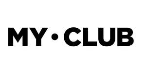

Trade Mark Journal No.2025/049 5 December 2025
UK00004268726 24 September 2025 (18,25,35,42)
Mark 1
MY CLUB
Mark 2

- Class 18
- Umbrellas and parasols; walking sticks; whips, harness and saddlery; collars, leashes and clothing for animals; leather and imitations of leather; animal skins and hides; luggage and carrying bags; sports packs; holdalls for sports clothing; sports bags; rucksacks; backpacks; all-purpose sports bags; handbags, purses and wallets; tote bags; key wallets; coin purses; bags for sports; bags for sports wear; bags for sports clothing; kit bags; parts and fittings for all the aforesaid goods.
- Class 25
- Clothing, footwear, headwear; Wristbands [clothing]; Tops [clothing]; Knitted clothing; Motorcyclists' clothing; Children's clothing; Sports clothing; Gloves [clothing]; Waterproof clothing; Thermal clothing ; Motorists' clothing; Athletic clothing; Triathlon clothing; Windproof clothing; Ladies' clothing; Cloth bibs; Cyclists' clothing; Playsuits [clothing]; Jerseys [clothing]; Weatherproof clothing; Casual clothing; Shorts [clothing]; Outer clothing; Hoods [clothing]; Leisure clothing; Infant clothing; Girls' clothing; Jackets [clothing]; Kerchiefs; [clothing]; Capes (clothing); Wraps [clothing]; Silk clothing; Woolen clothing; Latex clothing; Knitwear [clothing]; Slipovers [clothing]; Women's clothing; Embroidered clothing; shirts; replica football kits; sports jerseys; sports bibs; sports shirts; clothing for sports; sports jackets; sports skirts; sports shorts; sports socks; sports vests; sports shoes; footwear for sports; moisture-wicking sports shirts; moisture-wicking sports leggings; swimwear; tracksuit tops; tracksuit bottoms; tracksuits; rainwear; quilted jackets; windproof jackets; fleece jackets; hoodies; sweatshirts; gilets; rainproof clothing; clothing for cycling; athletic clothing; baseball caps and hats; cycling caps; swimming caps; beanie hats; school uniforms; t-shirts; leggings; skorts; zip tops; polo shirts; cycling jerseys; athletic vests; e-sport jerseys; sports dresses; parts and fittings for all the aforesaid goods.
- Class 35
- Advertising; business management; business administration; office functions; advertising and promotion services; arranging commercial transactions, for others, via online shops; Online marketing; Comparison shopping services; Online ordering services; Online advertising services; Online business networking services; Online advertising on a computer network; Online retail services relating to luggage; Online retail services relating to clothing; retail services and online retail services connected with the sale of clothing and clothing accessories; retail services and online retail services connected with the sale of customised sports kits; retail services and online retail services relating to sporting goods; retail services and online retail services in relation to clothing accessories; advertising for others; modelling and models for advertising or sales promotion; product merchandising; preparing promotional and merchandising material for others; promoting the sale of goods and services of others through the distribution of printed material and promotional contests; information, advisory and consultancy services in relation to the aforesaid services.
- Class 42
- Scientific and technological services and research and design relating thereto; industrial analysis and industrial research services; design of sportswear; design of clothing accessories; clothing design services; dress designing; styling [industrial design]; providing online non-downloadable computer software for customisation of sports kits; information, advisory and consultancy services in relation to the aforesaid services.
My Club Europe Plc
Representative: Stobbs